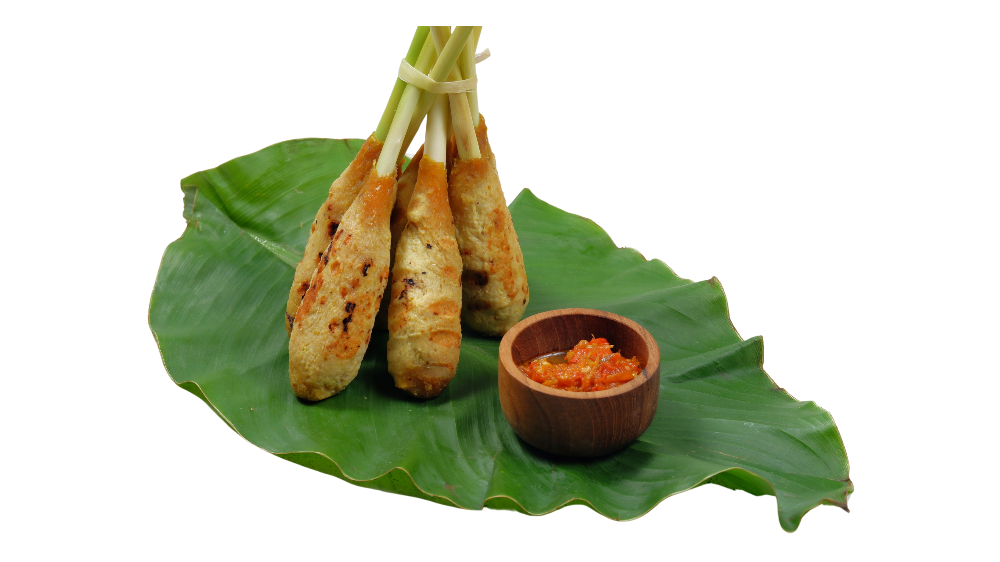

Sate Lilit
Sate Lilit adalah sebuah varian sate asal Bali, terbuat dari daging babi, ikan, ayam, daging sapi, atau bahkan kura-kura yang dicincang, kemudian dicampur dengan parutan kelapa, santan, jeruk nipis, bawang merah, dan merica. Daging cincang yang telah berbumbu dilekatkan pada sebuah bambu atau tebu, kemudian dipanggang di atas arang
Bahan
- 250gr daging ikan tuna yang sudah dihaluskan
- 12tangkai sereh, ambil bagian pangkal & potong bagian daunnya
- 2buah cabai merah keriting
- 2buah cabai rawit merah
- 3siung bawang merah
- 2siung bawang putih
- 1sdt ketumbar sangrai
- 1cm kunyit
- 1batang sereh, ambil bagian putihnya saja
- 1cm jahe
- 2cm lengkuas muda
- 2sdt terasi yang sudah dibakar
- 2cm kencur
- 1,5sdm gula jawa, sisir
- 1sdm air asam jawa
- 2sdt garam, tambahkan jika kurang asin
- 2sdm kelapa muda parut
- 50ml santan kental instan
- 1lembar daun jeruk purut, rajang halus
- 2buah cabai rawit merah, rajang halus
- 2sdm tepung tapioka rosebrand
Cara Membuat
Pertama
Siapkan wadah. Masukkan daging ikan tuna yg sudah dihaluskan. Tambahkan bumbu halus, tepung tapioka rosebrand dan bahan lainnya. Aduk hingga tercampur rata.
Kedua
Ambil 1 sdm adonan, beri sereh di bagian tengahnya, lalu kepal2 hingga padat.
Ketiga
Siapkan pan. Panaskan terlebih dahulu. Lalu panggang sate lilit dg api kecil hingga matang & kecoklatan. Balik sisi yg lain, supaya matang merata.